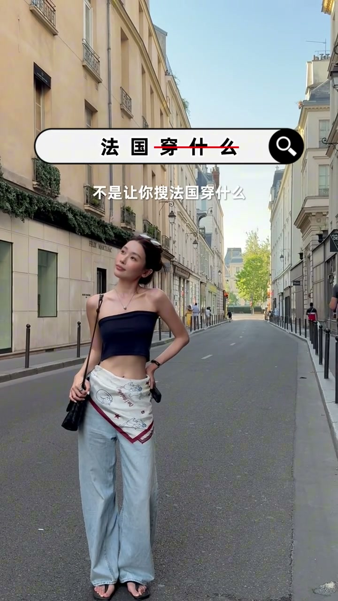

痛点：怎么穿都不合适
00:00你买半天衣服、选半天衣服，结果到那里发现怎么穿怎么搭都不合适。主要是我这个方法真的非常简单，两个技巧，包你提前预判到你带的所有的衣服，到了目的地以后怎么穿都合适。

技巧1：搜目的地图片，提取颜色
00:13第一步：打开手机搜索你要去的城市。注意不是搜“这个城市穿什么”，而是搜当地最有特点的图片，用你的肉眼去提取颜色。
00:26看出现最多的主体就是建筑的颜色，还有建筑经常搭配的门头、装饰的颜色。这些最经常被大家拿出来传播的颜色，就是你选择衣服的主色调。
00:40效果验证：这几套衣服放当地非常合适。你就这么想——当地景色本身配套的颜色能吸引你过去，说明这些颜色进入它整体环境里绝对没错。
色系融入才是重点
00:52同理，如果我这一套颜色的衣服去南法，指定就是不对。去一个地方搭配衣服，先别考虑技巧，重点是你的色系融进去是不是非常搭配。整个主体颜色非常配套的话，其他的都只是天花（点缀）而已。
技巧2：搜当地风格
01:06第二个技巧：依旧搜索。想象法国也就是欧洲那一片，网上刷到的最流行的风格，其实就两个：一个是留子风，一个是法式千金风。比如博主就是非常典型的留子风。
01:19搜索“留子风穿搭”开始学习。学什么？不要看别人穿什么、总想着买人家身上那件衣服。我们就是要把自己已有的东西，套进人家的穿搭公式里。一看材质，二看元素。
留子风元素清单
01:35搜索留子风后发现出现最多的元素：牛仔、各种各样的吊带和抹胸、骑士风上衣、英伦学院风上衣、宽大的带字母上衣。
01:46配饰：包基本上全部都是松弛的大包——编织皮面、做旧皮面、布袋子。除此之外经常出现的配饰：老头帽、丝巾、墨镜、银色金属首饰。
02:00你们看，全部都是经常出现的元素。其实这些东西大家人手基本上都有，没有的可以替补一下，都是可以反复拿来利用的基础款。
打包出发
02:08整理到这一步以后，把我有的相关的单品全部扔进行李箱，随便穿随便搭它都是很配的。到当地现搭现配，就这么简单。记录一两步，出发吧！